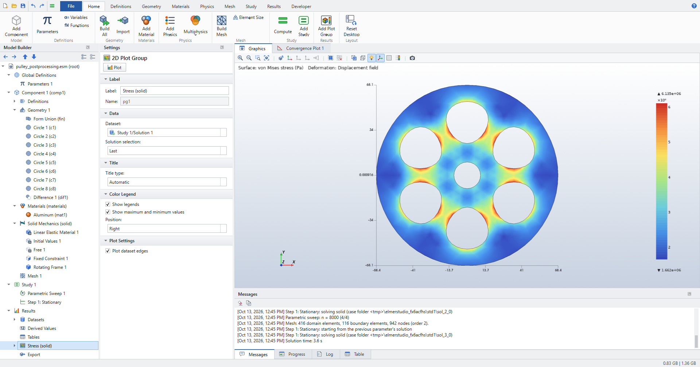
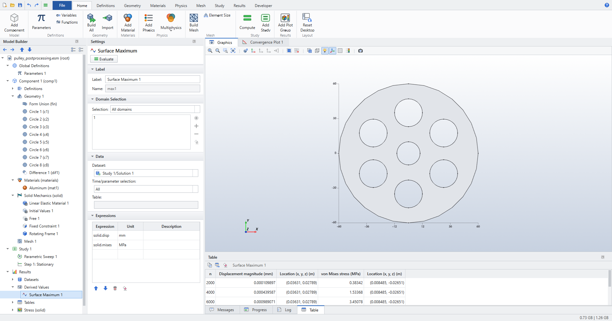
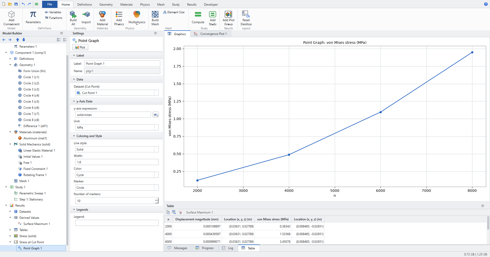
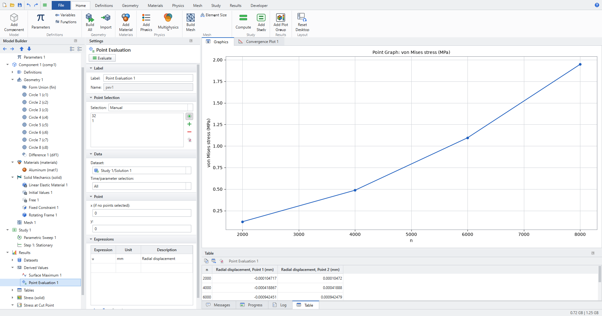
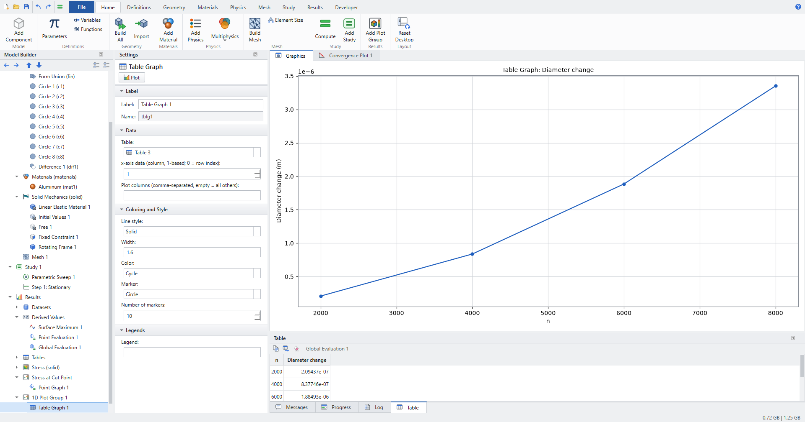
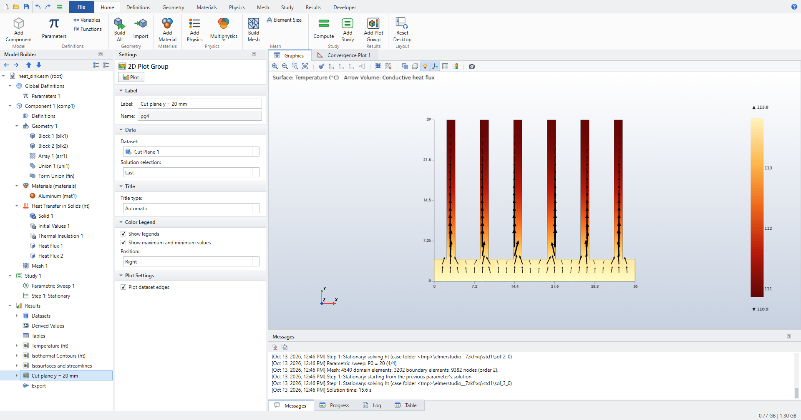
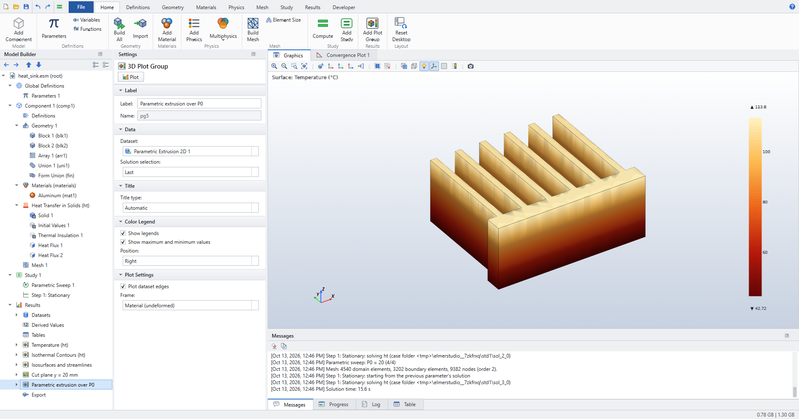
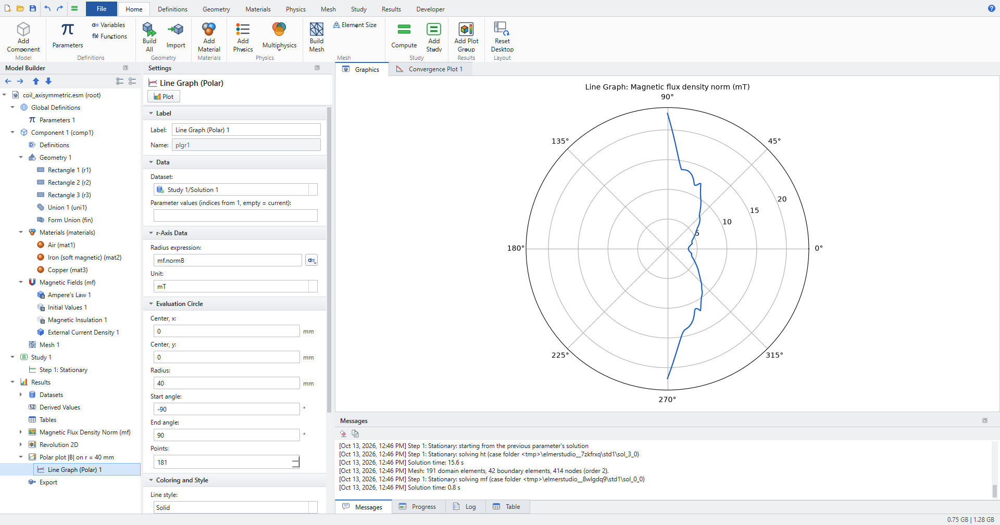
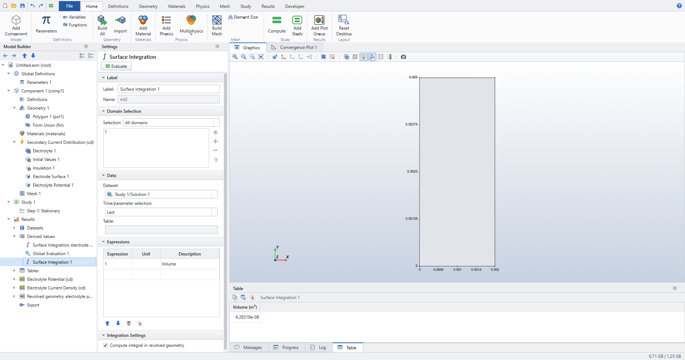
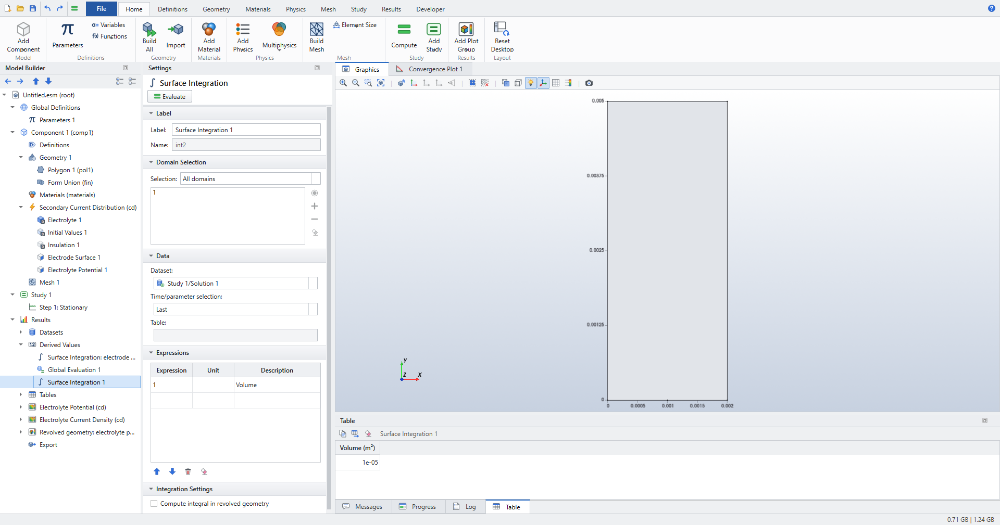

Postprocessing and Visualization
This tutorial follows the workflow of the COMSOL guide Essentials of Postprocessing and Visualization in Elmer Studio. The guide’s own models are COMSOL files, so each walkthrough uses a stand-in model that exercises the same postprocessing steps: a spinning pulley in 2D, a verification against Lamé’s solution, the heat sink in 3D, and a 2D axisymmetric coil.
What you will learn:
-
run a Parametric Sweep and evaluate maxima, point values and global expressions over all parameter values;
-
define Integration coupling operators and Definitions variables, and use them in result expressions;
-
plot point values, tables, contours with labels, arrows and annotations;
-
show 3D results as wireframes, isosurfaces and streamlines;
-
build new datasets (Cut Point, Cut Plane, Parametric Extrusion 2D, Revolution 2D) and plot on them;
-
draw a polar plot, and integrate 2D axisymmetric results in the revolved geometry.
Every number quoted under Check the results comes from the regression tests tests/test_tutorial_postprocessing.py and tests/test_electrochemistry.py. The screenshots come from the GUI walkthroughs tools/screenshot_postprocessing.py and tools/screenshot_revolved.py.
| The Results ribbon, Model Builder and Settings window work as in COMSOL. A plot group holds plots, a dataset says what a plot or evaluation is computed on, and a derived value writes its result to a table. See Results for the general concepts. |
Pulley: evaluations over a parametric sweep
A thin aluminum disk with a hub and six openings spins about its center. The centrifugal load is a Rotating Frame with angular velocity n[rpm], and a Parametric Sweep runs n from 2000 to 8000 rpm. The pulley is not in the Application Libraries; you build it in a few steps.
Model
-
Click , choose Model Wizard, then 2D. Under Structural Mechanics select Solid Mechanics (solid), click Add, then Study, choose Stationary and click Done.
-
Click and enter the parameters in the table of Parameters 1:
Name Expression Description n4000Rotational speed (rpm)
R60[mm]Pulley radius
Rh10[mm]Hub radius
Ro12[mm]Opening radius
Rp35[mm]Opening pitch radius
-
Click Geometry 1 and set Length unit to
mm. -
Click eight times and set Radius (and x, y under Position) as follows:
Circle Radius x y 1 (disk)
R002 (hub)
Rh003
RoRp*cos(0*pi/3+pi/6)Rp*sin(0*pi/3+pi/6)4
RoRp*cos(1*pi/3+pi/6)Rp*sin(1*pi/3+pi/6)5
RoRp*cos(2*pi/3+pi/6)Rp*sin(2*pi/3+pi/6)6
RoRp*cos(3*pi/3+pi/6)Rp*sin(3*pi/3+pi/6)7
RoRp*cos(4*pi/3+pi/6)Rp*sin(4*pi/3+pi/6)8
RoRp*cos(5*pi/3+pi/6)Rp*sin(5*pi/3+pi/6) -
Click . Put Circle 1 in Objects to add and Circles 2 to 8 in Objects to subtract. Press F8 to build all.
Circles are built from four arcs with vertices at 0°, 90°, 180° and 270°, as in COMSOL. The disk therefore has geometry points at (60, 0) mm and (−60, 0) mm, which you use for point evaluations below. -
Click , pick Aluminum in the Add Material window and add it. The first material goes to all domains.
-
Click Solid Mechanics (solid) and set 2D approximation to Plane stress.
-
Click and click the four arcs of the hub hole in the Graphics window.
-
Click , click the pulley domain and set Angular velocity to
n[rpm]. The axis is parallel to z through Axis point (0, 0). See Solid Mechanics (solid) for the feature settings.
Coupling operators and a variable
The change of the diameter along x is the displacement of the far-right point minus that of the far-left point. Two Integration coupling operators on single points pick these values.
-
Right-click Definitions (under Component 1) and choose Integration. Operator name is filled in as
intop1. Set Geometric entity level to Point and click the point at (60, 0) mm. -
Right-click Definitions again and choose Integration (
intop2). Set Geometric entity level to Point and click the point at (−60, 0) mm. -
Click and add the row Name
diam, Expressionintop1(R+u)-intop2(-R+u), DescriptionDeformed diameter.
| An Integration operator over a single point returns the value at that point, as in COMSOL. See Parameters, variables and functions. |
Study
-
Select Study 1 and click . Parameter name is already
n(the first parameter). Set Parameter value list torange(2000,2000,8000)and leave Parameter unit empty. -
Click (or press Ctrl+=). The study solves four stationary problems, for n = 2000, 4000, 6000 and 8000 rpm.
Elmer Studio creates the default plot group Stress (solid), which shows the von Mises stress on the deformed shape for the last parameter value.

See Studies and solving for sweeps and solution selection.
Surface Maximum over the sweep
-
Right-click Derived Values (under Results) and choose Surface Maximum.
The Results ribbon button is labeled . In a 2D component it creates the same node, named Surface Maximum 1, because derived values are named after the space dimension as in COMSOL. -
Set Time/parameter selection to All.
-
In the Expressions table enter
solid.dispwith Unitmm, andsolid.miseswith UnitMPa. -
Click Evaluate at the top of the Settings window.
The Table window lists, for each n, the maximum displacement and the maximum von Mises stress, each with its location.

Cut Point and Point Graph
-
Click . Under Point Data set x to
19and y to54(in the geometry unit, mm). Dataset is already the study solution. -
Select Results and click . Elmer Studio adds a 1D Plot Group with a Point Graph in it. Rename the plot group to
Stress at Cut Point(F2). -
In the Point Graph settings check that Dataset (Cut Point) is Cut Point 1, and set y-axis expression to
solid.mises, Unit toMPaand Marker to Circle. -
Click Plot.
The x-axis is the sweep parameter n: the graph shows one value per solution.

Point Evaluation on geometry points
-
Click .
-
Click the point at (60, 0) mm and the point at (−60, 0) mm in the Graphics window. In the screenshot they are points 32 and 1.
-
Set Time/parameter selection to All.
-
In the Expressions table enter
u(the x displacement), Unitmm, DescriptionRadial displacement. -
Click Evaluate.
The table has one column per point, in increasing point number: the left point moves to −x and the right point to +x, by the same amount.

Global Evaluation and Table Graph
-
Click . Time/parameter selection is All by default.
-
Enter
diam-2*Rin the Expressions table with DescriptionDiameter changeand click Evaluate. The result is in metres, becauseRand the displacement are evaluated in SI units. -
Select Results and click . Elmer Studio adds a new 1D Plot Group.
-
Table is the newest table, the one of the Global Evaluation (Table 3 in the screenshot). Keep x-axis data (column, 1-based; 0 = row index) at
1(the n column) and set Marker to Circle. -
Click the parent 1D Plot Group and set y-axis label to
Diameter change (m). Click Plot.

Contours, arrows and an annotation
-
Click and rename it
Stress with annotations. -
In its Surface 1 set Expression to
solid.misesand Unit toMPa. -
Select the plot group and click . Set Expression
solid.mises, UnitMPa, Total levels8, check Level labels, set Coloring to Uniform, Color to Black and clear Color legend. -
Select the plot group and click . Set Vector expression to
solid.u_vec, x grid points and y grid points to14, and Color to Black. -
Select the plot group and click . Set Text to
eval(solid.mises, MPa), x to19and y to54(mm). Click Plot.
eval(expression, unit) in an annotation is replaced by the value at the annotation’s position. Here it shows 1.947 MPa at the Cut Point for n = 8000 rpm, the last point of the Point Graph.

Check the results
tests/test_tutorial_postprocessing.py builds the same model and checks:
-
The sweep values are 2000, 4000, 6000 and 8000. The Surface Maximum table has the columns Displacement magnitude (mm), Location (x, y, z) (m), von Mises stress (MPa), Location (x, y, z) (m).
-
The maximum displacement, the maximum von Mises stress and the Point Graph values all scale with n², to a relative tolerance of 1e-6 (linear elasticity with a centrifugal load ρΩ²r).
-
At 8000 rpm the maximum von Mises stress lies between the hoop stress of a plain spinning annulus with the same hub and rim (about 5.7 MPa) and six times that value. The maximum displacement lies between 1e-4 mm and 1e-2 mm. The screenshot shows 6.135 MPa.
-
The Point Evaluation is positive at the far-right point and negative at the far-left point, and the two magnitudes agree within 5 %.
-
diam-2*Rfromintop1andintop2equals the difference of the two point values (converted to metres) to a relative 1e-9. In the screenshots, at n = 2000: 0.00010472 mm − (−0.000104717 mm) = 2.09437e-7 m. -
The Table Graph draws one line over n = 2000 to 8000, titled Table Graph: Diameter change.
Rotating annulus: verification against Lamé
A free spinning annulus has a closed-form plane-stress solution, so it checks the Rotating Frame load and the point evaluation.
-
Create a 2D model with Solid Mechanics (solid) and a Stationary study, as for the pulley. Add the parameter
n=10000. -
Set the geometry Length unit to
mm. Add a Circle with Radius60and Sector angle90, a Circle with Radius10, and a Difference that subtracts the small circle from the quarter disk. -
Add the material Structural steel.
-
Set 2D approximation to Plane stress.
-
Add a Roller on the straight edge at x = 0 and another Roller on the straight edge at y = 0. Both rims stay free.
-
Add a Rotating Frame on the domain with Angular velocity
n[rpm]. -
Click Mesh 1 and set Element size to Extra fine.
-
Compute, then add a Point Evaluation on the points (10, 0) mm and (60, 0) mm with the expressions
solid.syandu. On the x-axis σyy is the hoop stress.
Check the results
With ρ = 7850 kg/m³, ν = 0.3, E = 200 GPa, a = 10 mm, b = 60 mm and Ω = 10 000 rpm, Lamé’s plane-stress solution gives
-
hoop stress at the bore: \(\sigma_\theta(a) = \frac{3+\nu}{4}\rho\Omega^2\left(b^2 + \frac{1-\nu}{3+\nu}a^2\right)\) ≈ 25.7 MPa,
-
hoop stress at the rim: \(\sigma_\theta(b) = \frac{3+\nu}{4}\rho\Omega^2\left(a^2 + \frac{1-\nu}{3+\nu}b^2\right)\) ≈ 6.13 MPa,
-
rim displacement \(u(b) = b\,\sigma_\theta(b)/E\) ≈ 1.84 µm.
test_rotating_annulus_lame requires the computed hoop stresses at both rims within 3 % and the rim displacement within 1 %. The README records the measured agreement: hoop stress at the bore within 0.7 %, rim displacement within 0.01 %.
Heat sink: 3D plots and derived datasets
The heat sink is an aluminum base with six fins (Heat Transfer in Solids, ht, see Heat Transfer in Solids (ht)). A heat flux carrying the total power P0 enters through the bottom face, and every other face loses heat by convection (h = 15 W/(m²·K), 20 °C). A sweep over P0 provides the parameter values for the Parametric Extrusion at the end.
Model and study
-
Click .
-
Select Study 1 and click . Parameter name is already
P0. Set Parameter value list torange(5,5,20)and Parameter unit toW. -
Click . The four solutions are for P0 = 5, 10, 15 and 20 W.
Wireframe, isosurfaces and streamlines
-
Click and rename it
Isosurfaces and streamlines. -
In Surface 1 set Expression
T, UnitdegC, check Wireframe, set Coloring to Uniform, Color to Gray and clear Color legend. -
Select the plot group and click . Set Expression
T, UnitdegCand Total levels6. -
Select the plot group and click . Set Vector expression to
ht.tflux, Positioning to Start point controlled (selected boundaries), Number of streamlines to30and Line type to Tube. -
Right-click Streamline 1 and choose Selection. Click the bottom face of the base (z = 0), where the heat enters. The streamlines start on the selected boundaries.
-
Click Plot.

The plot shows two legends: the streamlines are colored by the heat flux magnitude, the isosurfaces by temperature (110.8 °C to 113.8 °C at 20 W).
Cut Plane in a 2D plot group
-
Click . Set Dataset to Study 1/Solution 1, Plane type to Quick, Plane to zx-planes and Coordinate to
20(mm, the middle of the 40 mm depth). -
Click , rename it
Cut plane y = 20 mmand set its Dataset to Cut Plane 1. -
In Surface 1 set Expression
T, UnitdegCand Color table ThermalLight. -
Select the plot group and click . Set Vector expression to
ht.tflux, x grid points to24, y grid points to18and Color to Black. Click Plot.
The cut plane is drawn in its in-plane coordinates: x across the fins and z upward.

Parametric Extrusion over the sweep
-
Click . Set Dataset (cut plane or 2D solution) to Cut Plane 1. Leave Parameter values (indices from 1, empty = all) empty and Level scale factor at
1. -
Click , rename it
Parametric extrusion over P0and set Dataset to Parametric Extrusion 2D 1. -
In Surface 1 set Expression
T, UnitdegCand Color table ThermalLight. Click Plot.
The dataset stacks the cut plane of every sweep solution at the height parameter value × Level scale factor (in geometry units) and fills the space in between. Here the third axis is P0 from 5 to 20, so the plot shows how the temperature on the cut plane rises with the dissipated power (42.7 °C to 113.8 °C).

| Datasets chain: a Cut Plane takes a solution, a Parametric Extrusion takes a Cut Plane, and a Mirror can take either. See Datasets for every dataset setting. |
Check the results
The heat sink walkthrough has no closed form, so the datasets and plots are checked on a 40 × 20 × 10 mm aluminum block with 300 K at x = 0 and 400 K at x = 40 mm, where the temperature is exactly linear in x (test_cut_plane_mirror_extrusion, test_plot_scenes_and_polar):
-
A yz Cut Plane at x = 10 mm reads 325 K everywhere (to 1e-6 K). Its in-plane coordinates run 0 to 20 mm and 0 to 10 mm, and its area integrates to 20 × 10 mm² to 1e-12 m².
-
On an xy cut plane the temperature is 300 K + 2.5 K/mm · x, and the heat flux points toward −x with zero z component.
-
A Mirror in x = 0 doubles the nodes and the volume, and copies the values.
-
A Parametric Extrusion of an xy cut plane over three levels (0, 1, 2) with Level scale factor 5 has twice the cells of the plane, the volume 40 × 20 × 10 mm³ and the mean temperature 350 K (to 1e-6 K).
-
A Mirror of a quick yz Cut Plane at x = 30 mm reads 375 K.
-
Every 3D plot type (Surface with wireframe, Slice by coordinates, Isosurface, filled Contour with labels, Arrow Volume on a 5 × 4 × 3 grid, Streamline, Line, Mesh) draws without error. A Selection subnode restricts a Surface plot to the selected boundary.
-
The annotation
T = eval(T, degC)at x = 20 mm readsT = 76.85(350 K).
Coil: Revolution 2D and polar plots
A copper coil around an iron core in air, modeled in 2D axisymmetry (Magnetic Fields, mf, see Magnetic Fields (mf)). Two views turn the r-z solution into something easier to read: a revolved 3D view, and a polar plot of |B| on a circle around the coil.
Revolution 2D dataset
-
Click . Set Dataset to Study 1/Solution 1. Keep Start angle
-90and Revolution angle225, and set Number of layers to48. -
Click , rename it
Revolution 2Dand set Dataset to Revolution 2D 1. -
In Surface 1 set Expression
mf.normBand UnitmT. -
Right-click Surface 1 and choose Selection. Geometric entity level is Domain; click the core and the coil, leaving the air out. Click Plot.

| For a quick look without a dataset, a 2D Plot Group of an axisymmetric model has the check box Show 2D axisymmetric revolution (3D). |
Polar plot
-
Click . It already contains Line Graph (Polar) 1.
-
In Line Graph (Polar) 1 set Radius expression to
mf.normBand Unit tomT. -
Under Evaluation Circle set Center, x and Center, y to
0, Radius to40(mm), Start angle to-90, End angle to90and Points to181. Click Plot.
In the r-z plane, x is r and y is z, so the half circle from −90° to 90° runs from the axis below the coil, around the coil at r = 40 mm, to the axis above it. The polar plot group’s Zero angle is Right (0 deg = +x) by default.

Check the results
-
The Revolution 2D settings (start angle, revolution angle, layers) are read as entered, also when the dataset is chained to a Cut Plane (
test_cut_plane_mirror_extrusion). -
A 2D axisymmetric solution shown with Show 2D axisymmetric revolution (3D) becomes a 3D scene that carries the field and sweeps into negative z (
tests/test_revolve.py). -
The polar evaluation is checked on the linear-temperature block: on a circle of radius 8 mm around (20, 10) mm in an xy cut plane, the values are 350 K + 20 K · cos θ to 1e-6 K, and the plot is drawn on polar axes with one line (
test_plot_scenes_and_polar).
Integrals of 2D axisymmetric models
In a 2D axisymmetric component, Volume Integration, Surface Integration and Volume Average integrate in the revolved geometry, with the weight 2πr. This is COMSOL’s Compute integral in revolved geometry and it is on by default. Clear the check box to integrate over the r-z plane instead. See Derived values.
The screenshots use a small model: a cylinder of electrolyte (R = 2 mm, H = 5 mm, conductivity 5 S/m, primary current distribution), a disc electrode r < R/2 at z = 0 held at 0.1 V, and the electrolyte potential 0 on the top.
| In a 2D component the derived values are named after the entity dimension: the boundary integral is Line Integration and the domain integral is Surface Integration. In the revolved geometry they still return a surface and a volume integral. |
-
Right-click Derived Values and choose Line Integration. Click the electrode boundary, enter
cd.ilocin the Expressions table and click Evaluate. Compute integral in revolved geometry is checked, so the result is the electrode current in A. Figure 12. Electrode current from the local current density, integrated over the revolved electrode
Figure 12. Electrode current from the local current density, integrated over the revolved electrode -
Click , enter
cd.es1.Itot(the total current of the electrode, from the reaction loads) and click Evaluate. Both tables show 0.00105805 A. Figure 13. The electrode current reported by the electrode feature
Figure 13. The electrode current reported by the electrode feature -
Right-click Derived Values and choose Surface Integration. Leave Selection at All domains, enter
1with DescriptionVolumeand click Evaluate. The result is the cylinder volume πR²H = 6.28319e-8 m³. The screenshot shows the cylinder through a Revolution 2D dataset (start −90°, 270°).
Figure 14. Volume of the revolved cylinder -
Clear Compute integral in revolved geometry and click Evaluate again. The result is now the area of the r-z section, R·H = 1e-5 m².

Figure 15. The same integral over the r-z plane
| An integral over the r-z plane is not a physical quantity of the 3D object. Keep the check box on unless you want the plane integral on purpose. |
Check the results
tests/test_electrochemistry.py checks, on the same cylinder:
-
With the electrode across the whole bottom, the volume is πR²H, the lateral surface 2πRH and the Surface Integration of
cd.ilocover the electrode equalscd.es1.Itot= πR²σV/H, all to 1e-9. The revolved average ofcd.ilocis σV/H to 1e-9. -
Unchecked, the volume integral is R·H and the side boundary integral is H, to 1e-9. The revolved mean radius is 2R/3 (within 1 %) and the r-z plane mean radius R/2 (to 1e-9).
-
New Volume Integration, Surface Integration and Volume Average nodes have the option on; the option is shown only for 2D axisymmetric models. The column units are those of the revolved measure: m³ for the volume, A for
cd.ilocover a boundary. -
With the disc electrode r < R/2 (the screenshot model), the revolved integral of
cd.ilocequalscd.es1.Itotto 1e-9, and the current lies between π(R/2)²σV/H and πR²σV/H.
Where to go next
-
Acoustics uses Grid 3D, Parametric Curve 3D, Radiation Pattern and Directivity plots on an acoustics solution.
-
Application Library examples lists every example model.
-
Plot groups and plots and Result variables list every plot setting and result variable.